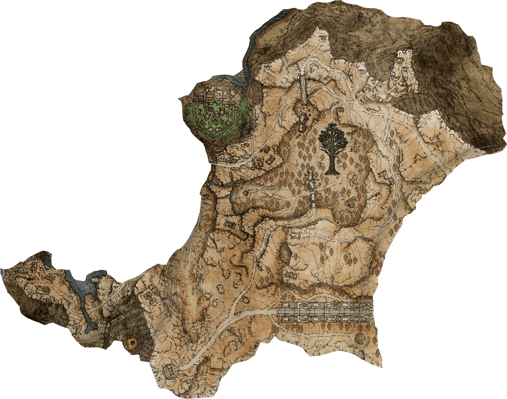
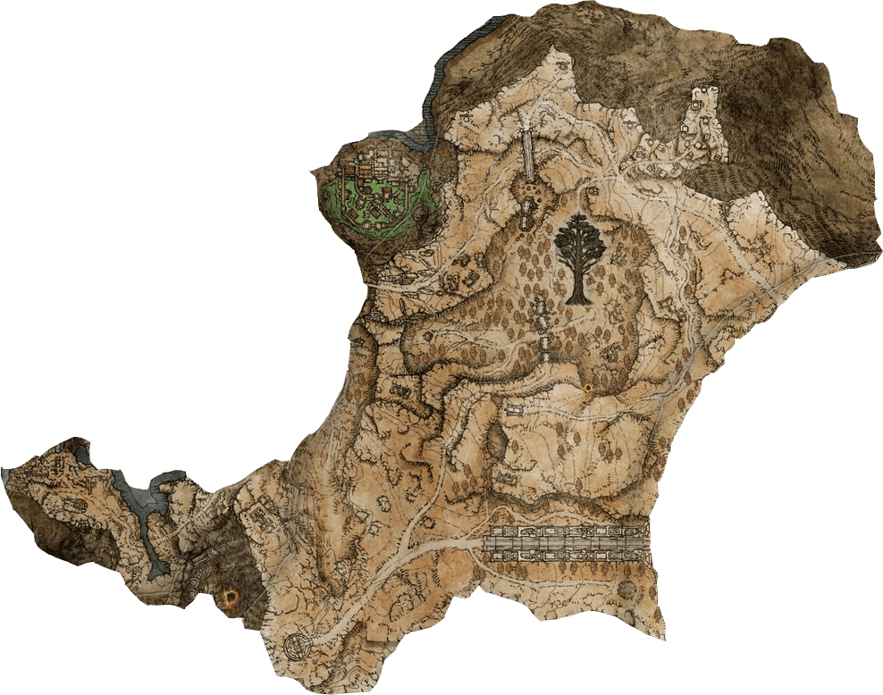
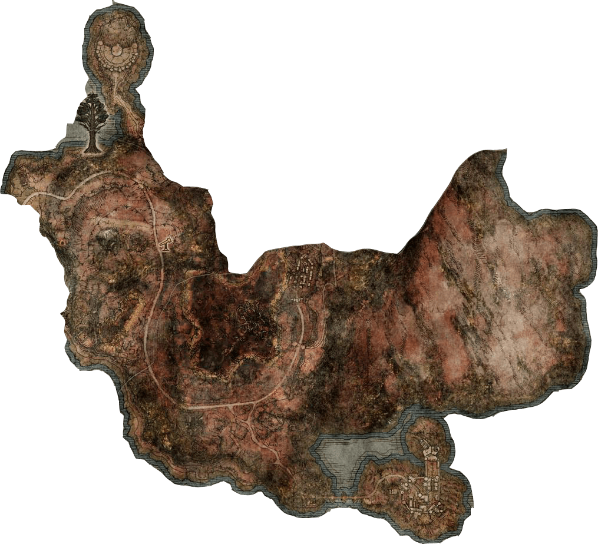
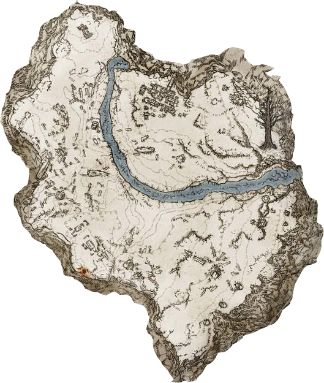
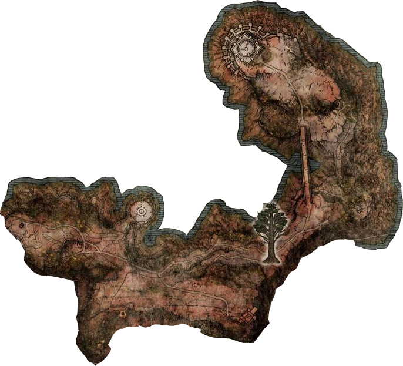
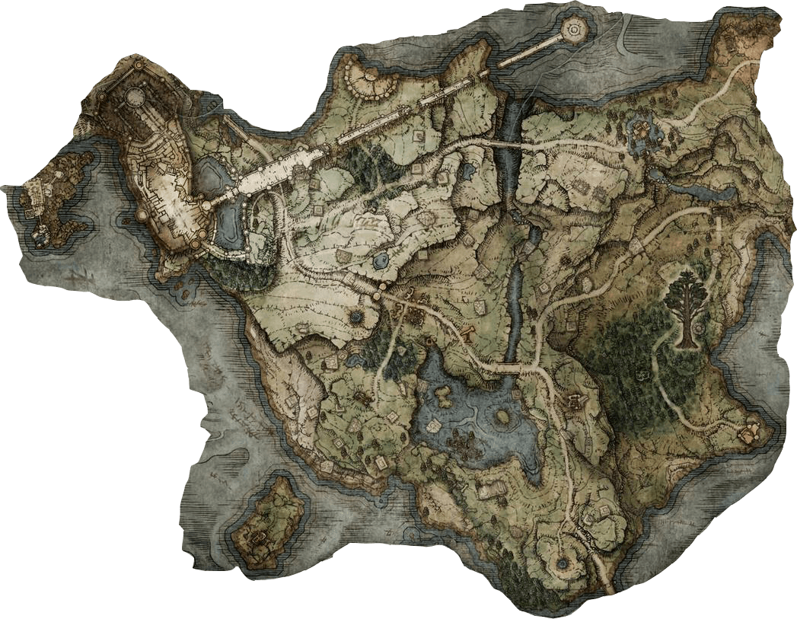
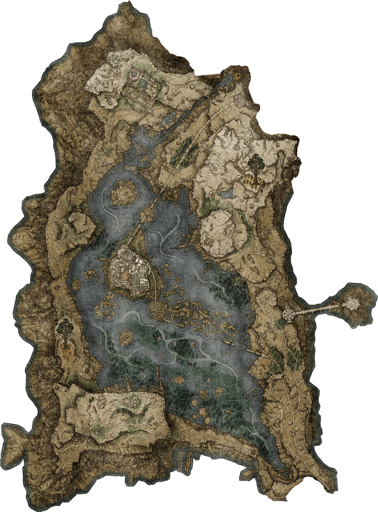
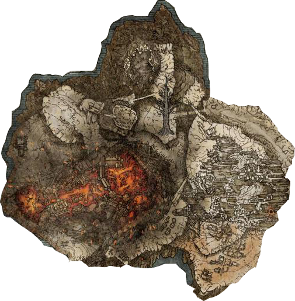
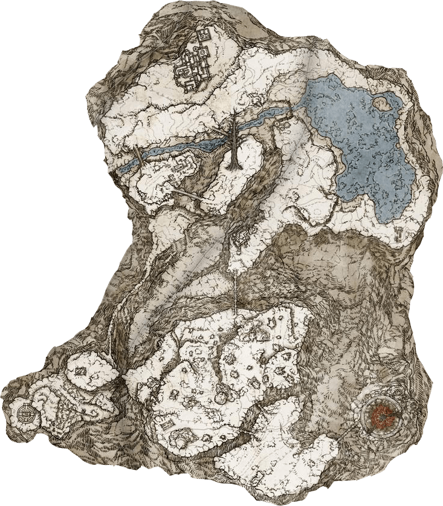
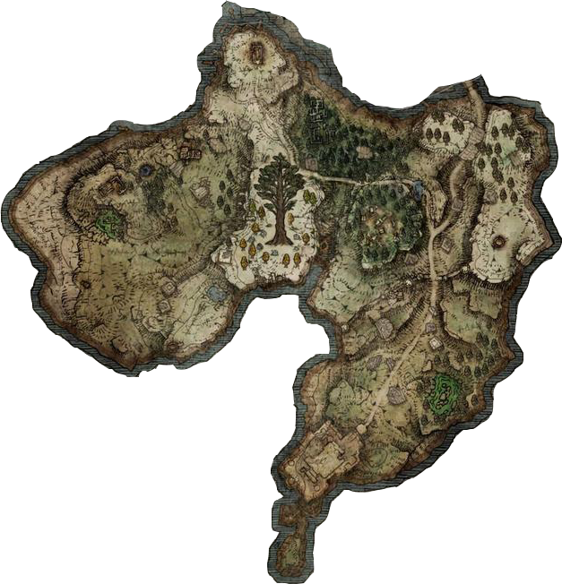

Meseta

MesetaAltus  Caelid  Campo de Nieve
Consagrado  Túmulo de
Dragones  Necrolimbo  Liurnia de
los lagos  Monte
Gelmir  Pico de
los Gigantes  Península
del Llanto

Mapa interactivo
Haz clic en alguno de los pequeños botones para ver información sobre el lugar.
Hecho por Andres Leonardo Escobar Pinzon - 2022